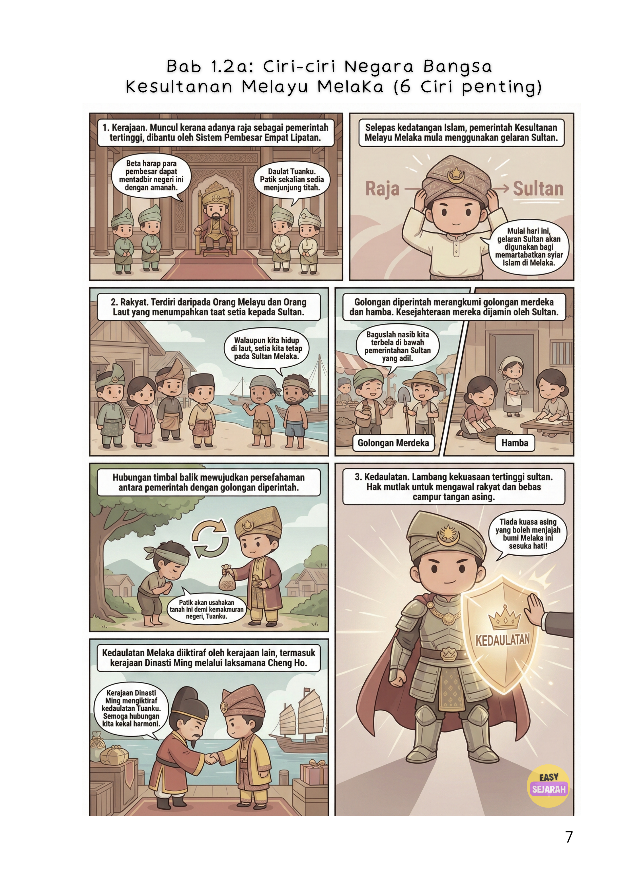
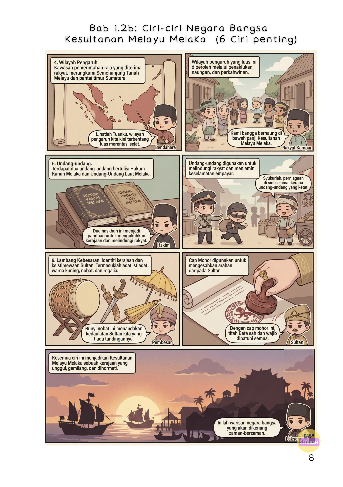
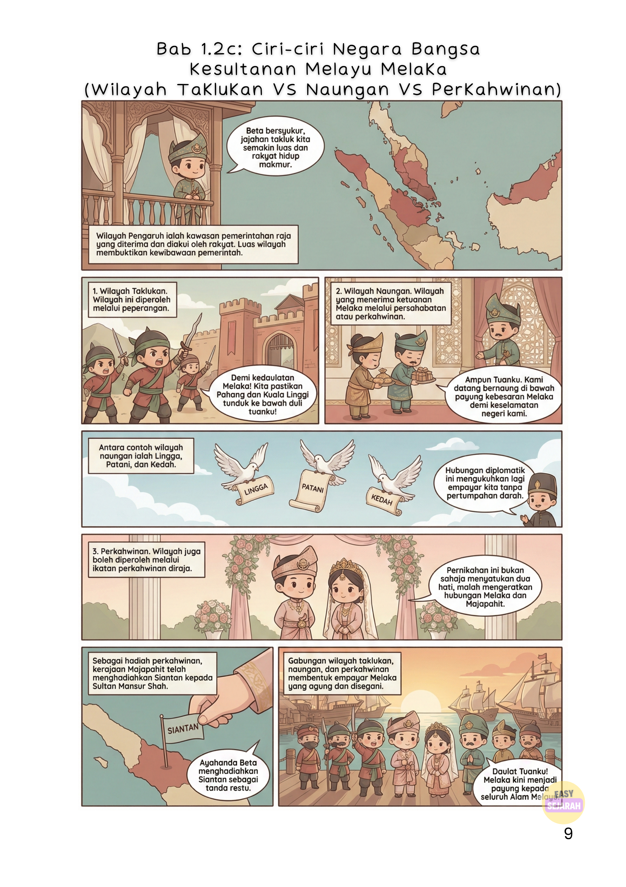

Bab 1.2: Ciri-ciri Negara Bangsa Kesultanan Melayu Melaka
6 ciri penting yang menjadikan Kesultanan Melayu Melaka sebuah empayar yang agung dan disegani — dalam format komik yang seronok dan mudah faham!
📖 Tingkatan 4 Bab 1.2👑 6 Ciri Penting🗺️ Wilayah Pengaruh🎨 3 Muka Komik
Kesultanan Melayu Melaka bukan sekadar kerajaan biasa. Ia mempunyai sistem pemerintahan yang tersusun, undang-undang yang jelas, dan wilayah pengaruh yang luas. Hari ni kami kongsikan komik bergambar yang cover semua 6 ciri penting Bab 1.2 — mudah baca, mudah ingat!
👑 6 Ciri Penting Kesultanan Melayu Melaka
Sebelum baca komik, tengok dulu ringkasan 6 ciri yang akan kau jumpa:
Ciri 1
👑 Kerajaan
Ada raja sebagai pemerintah tertinggi, dibantu Sistem Pembesar Empat Lipatan
Ciri 2
👥 Rakyat
Orang Melayu dan Orang Laut yang taat setia kepada Sultan
Ciri 3
🛡️ Kedaulatan
Lambang kekuasaan tertinggi sultan, bebas campur tangan asing
Ciri 4
🗺️ Wilayah Pengaruh
Merangkumi Semenanjung Tanah Melayu dan pantai timur Sumatera
Ciri 5
📜 Undang-undang
Hukum Kanun Melaka dan Undang-Undang Laut Melaka
Ciri 6
🥁 Lambang Kebesaran
Adat istiadat, warna kuning, nobat, regalia, dan cap mohor
💡
Tips Exam:
Soalan SPM selalu tanya "Huraikan ciri-ciri negara bangsa Kesultanan Melayu Melaka." Ingat 6 ciri di atas — setiap ciri boleh dapat 1-2 markah!
🎨 Komik Bab 1.2a — Ciri 1, 2 & 3
Kerajaan, Rakyat, dan Kedaulatan Melaka. Termasuk bagaimana Dinasti Ming mengiktiraf kedaulatan Melaka melalui Laksamana Cheng Ho!

E-Komik EasySejarah — Bab 1.2a: Kerajaan, Rakyat & Kedaulatan (ms. 7)
🎨 Komik Bab 1.2b — Ciri 4, 5 & 6
Wilayah Pengaruh, Undang-undang, dan Lambang Kebesaran Melaka. Dari Hukum Kanun Melaka sampai cap mohor Sultan!

E-Komik EasySejarah — Bab 1.2b: Wilayah Pengaruh, Undang-undang & Lambang Kebesaran (ms. 8)
🎨 Komik Bab 1.2c — Wilayah Taklukan, Naungan & Perkahwinan
Macam mana Melaka kembangkan wilayah pengaruhnya? Ada tiga cara — melalui peperangan, persahabatan, dan perkahwinan diraja!

E-Komik EasySejarah — Bab 1.2c: Wilayah Taklukan, Naungan & Perkahwinan (ms. 9)
Ciri 1: KerajaanSelepas kedatangan Islam, raja menggunakan gelaran Sultan. Dibantu oleh Sistem Pembesar Empat Lipatan untuk mentadbir negeri.
👥
Ciri 2: RakyatTerdiri daripada Orang Melayu dan Orang Laut. Golongan diperintah merangkumi golongan merdeka dan hamba — kesejahteraan mereka dijamin Sultan.
🛡️
Ciri 3: KedaulatanHak mutlak sultan untuk mengawal rakyat, bebas campur tangan asing. Diiktiraf oleh kerajaan Dinasti Ming melalui Laksamana Cheng Ho.
🗺️
Ciri 4: Wilayah PengaruhMerangkumi Semenanjung Tanah Melayu dan pantai timur Sumatera. Diperoleh melalui tiga cara: taklukan, naungan, dan perkahwinan.
📜
Ciri 5: Undang-undangDua undang-undang bertulis: Hukum Kanun Melaka dan Undang-Undang Laut Melaka. Melindungi rakyat dan menjamin keselamatan empayar.
🥁
Ciri 6: Lambang KebesaranAdat istiadat, warna kuning, nobat, regalia, dan cap mohor. Cap mohor digunakan untuk mengesahkan arahan daripada Sultan.
⭐
3 Cara Kembangkan Wilayah — Wajib Ingat!
Taklukan (peperangan) → contoh: Pahang, Kuala Linggi. Naungan (persahabatan) → contoh: Lingga, Patani, Kedah. Perkahwinan (diraja) → contoh: Siantan daripada Majapahit kepada Sultan Mansur Shah.
🎯
Dah faham Bab 1.2? Uji diri kau!
Cuba kuiz interaktif Sejarah T4 kami — percuma dan boleh buat bila-bila masa.